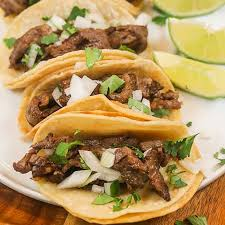

Tacos Recipe

This is a recipe list of ingredients needed to make delicious tacos, my way.
Note: Some of these ingredients can be interchangeable and changed to
your liking.
Ingredients:
- Corn Tortillas
- Steak (Of your choice)
- Lemon
- Cilantro
- Onion
- Salt
Steps:
- First start by cutting up meat, add lemon and choice of seasoning.
- Let marinate as you finish all other tasks.
- Next up, start by dicing onions and cilantro.
- Cut up some lemons in either halves or quarters.
- Come back to your meat and start by oiling a pan/ grill and letting it warm up.
- After it warms up begin to add meat and move meat around so it cooks evenly.
- Place meat in pan.
- Grab choice of tortillas.
- Oil up pan/ grill and place tortillas, make sure to flip them every so often.
- Place tortillas on plate and grab spoon and add meat to your tortillas.
- Add cilantro and onions that you had diced earlier.
- Finally add salsa and lemon to your tacos.
- Now you finally have your delicious tacos and are ready to eat!
*Heres a salsa recipe as I suck at making salsa.*